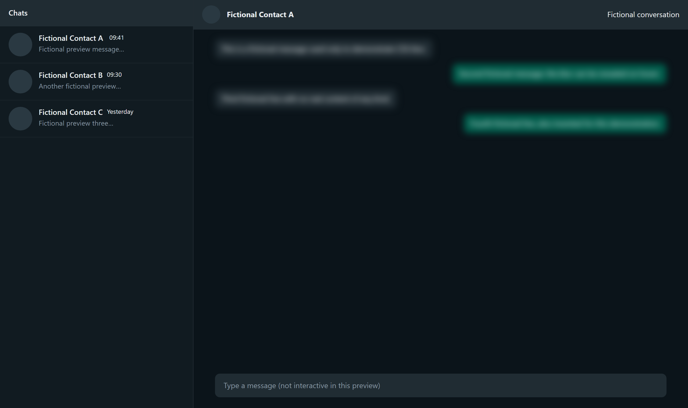

Browser extension Ekstensi browser · 2026
Blur WhatsApp Web
Visual blur for WhatsApp Web and retention of messages observed before deletion. Blur visual untuk WhatsApp Web dan penyimpanan pesan yang terlihat sebelum dihapus.
My role: Developer · Independent project Peran saya: Developer · Proyek mandiri

Actual extension popup, shown at compact size. Popup ekstensi asli, ditampilkan ukuran ringkas. · Open full size Buka ukuran penuh
The problem Masalah
Messages on a shared or visible screen can expose conversation content. A message already seen may later be deleted. Pesan pada layar yang terlihat orang lain dapat membuka isi percakapan. Pesan yang sudah terlihat juga dapat dihapus kemudian.
What I built Yang saya bangun
I built a Manifest V3 Chrome extension using CSS blur filters and DOM mutation tracking. The blur and retention logic runs in local browser code. Saya membangun ekstensi Chrome Manifest V3 menggunakan filter blur CSS dan pelacakan perubahan DOM. Logika blur dan penyimpanan berjalan dalam kode browser lokal.
- CSS blur filters for visible content Filter blur CSS untuk konten yang terlihat
- DOM mutation tracking Pelacakan perubahan DOM
- Retention of messages observed before deletion Penyimpanan pesan yang terlihat sebelum dihapus
Scope and limitations Lingkup dan batasan
It only retains messages the extension observed before deletion. Visual blur is not encryption. Ekstensi hanya menyimpan pesan yang terlihat sebelum dihapus. Blur visual bukan enkripsi.

CSS blur demonstrated on a fictional conversation. Blur CSS didemonstrasikan pada percakapan fiktif.
Want to discuss the implementation? Ingin membahas implementasinya?
Get in touch to discuss the workflow, technical choices, and my contribution. Hubungi saya untuk membahas alur kerja, pilihan teknis, dan kontribusi saya.
Email me Kirim email